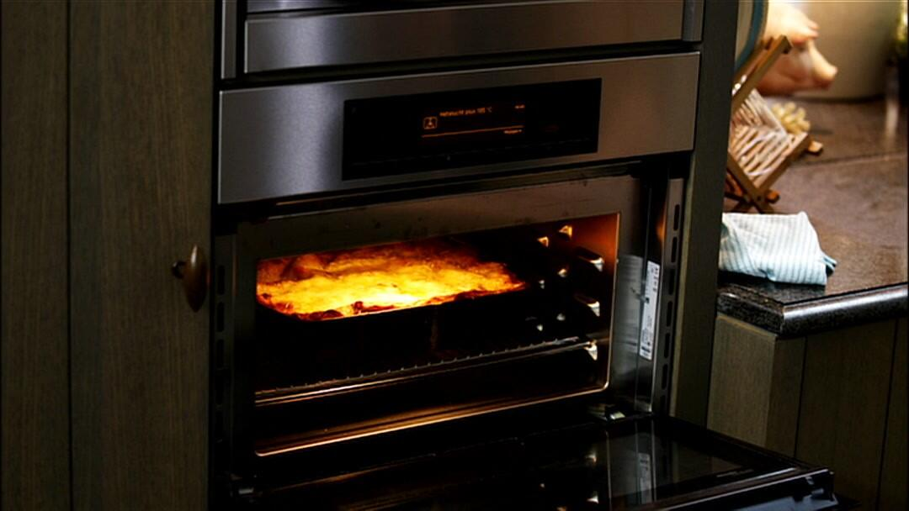

Lasagne recipe

Freshly baked lasagna out of the oven
Lasagne is an Italian casserole prepared with thin pasta sheets of approximately 10 by 15 cm. In Dutch these sheets are called lasagna sheets, in Italian they are referred to as lasagne (plural). Sometimes the complete dish is also referred to by this term in Italian, or lasagne al forno (sheets from the oven ). Although lasagna is a typical Italian dish, its name comes from Greece , where "lasanon" means flat cake of dough .
A fresh lasagna is pure comfort food . With little time and a few simple budget-friendly ingredients you can put a hefty dish on the table. You can also make this quick lasagna in advance, so that if you are short of time or if you have guests, you can quickly fill the plates generously with a steaming Italian classic.
Ingredients
- Olive oil
- Carrots
- Garlic
- Onions
- Oregano
- Passata
- Salt & Pepper
- Butter
- Milk
- Cheese
- Lasagna sheets
Steps
- Place a large saucepan over a medium heat. Pour in a splash of olive oil.
- Fry the minced meat in the hot olive oil. Stir regularly.
- Peel the onions and finely chop them. Crush the garlic to a pulp.
- Add the onions and garlic to the minced meat and allow to stew.
- Peel the carrots and cut off the top and bottom. Cut the vegetables into very fine pieces (brunoise). Do the same with the zucchini, although you don't have to peel this vegetable. Add them to the cooking pot.
- Clean the mushrooms with a dry brush. Cut them into coarse pieces. Also put them in the cooking pot.
- Let the minced meat and vegetables continue to stew, on a low heat.
- Finely chop the fresh oregano and basil leaves and let them simmer.
- Sprinkle the dried Provençal herbs with the minced meat and vegetables. Stir everything well.